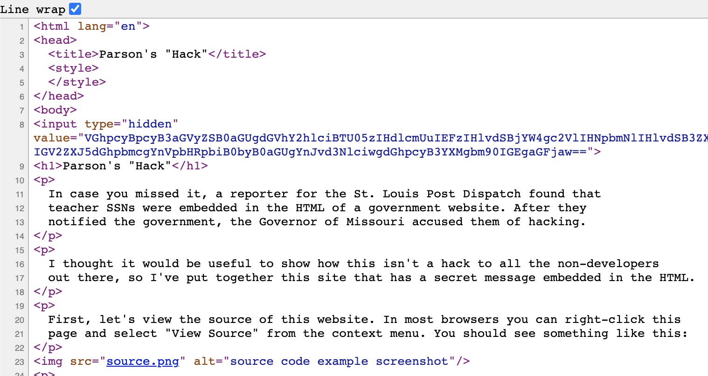

In case you missed it, a reporter for the St. Louis Post Dispatch found that teacher SSNs were embedded in the HTML of a government website. After they notified the government, the Governor of Missouri accused them of hacking.
I thought it would be useful to show to all the non-developers out there what is going on in this story, so I've put together this page that has a secret message embedded in the HTML.
First, let's view the source of this website. In most browsers you can right-click this page and select "View Page Source" from the context menu. You should see something like this:

At the top of the document, there's a hidden input field with a value that has
a lot of jumbled letters and numbers. We don't know exactly how the hidden teacher data was
stored in the document since they took the website down, but a hidden input is one way
it could have been done.
This hidden value is base64 encoded. How can you tell? This particular value ends in equal signs
(=) which is a big hint it's base64 since that is a symbol for padding that base64 encoding
uses. That means that many base64 encoded strings will end in =.
Another way to tell is by simply trying to decode it. There aren't other encodings commonly used, so if you see a jumble of letters and numbers, it's probably base64 encoded.
So let's go ahead and decode that value. Copy it to the clipboard, then open your browser's "Developer Tools" and go to the Console. To do this in Chrome, you can right-click this page and select Inspect, then click the Console tab.
Once in Console, use JavaScript's builtin atob function to decode the message.
It should look something like this:
There you have it, you can see my hidden message. However, you didn't just hack my website because: